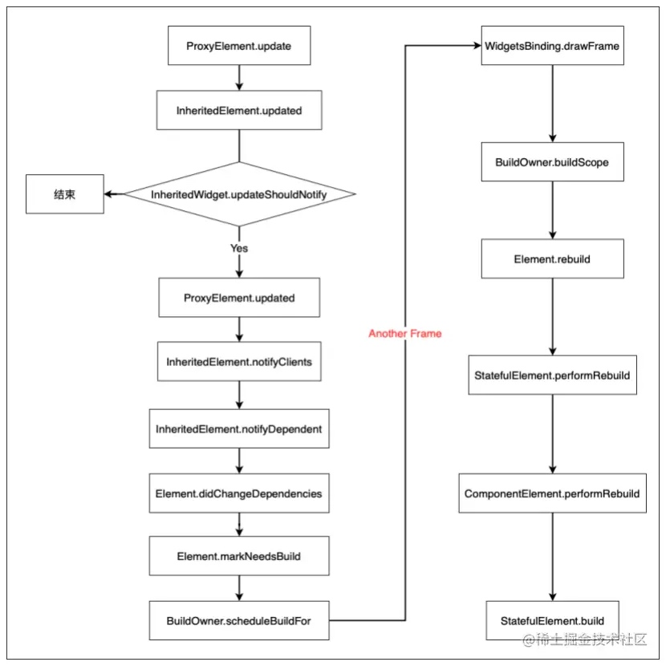
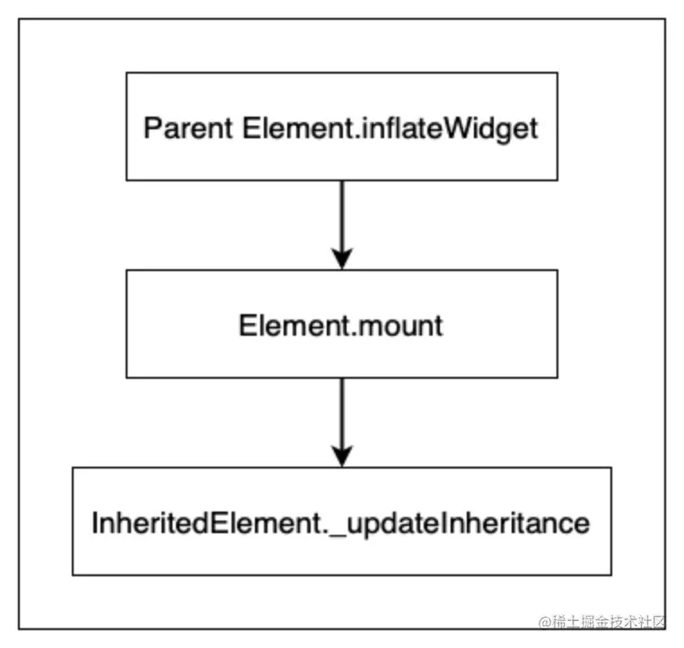

前言
在Flutter中，由于其激进式组合（Everything is Widget）的设计理念，多层Widget是很常见的，如何在不同层的Widget之间传递数据，是开发者经常遇到的问题。通常做法是将数据添加到下级Widget的构造函数中。但是如果传递数据的Widget层级相隔较远，那将数据一层层传下来将是个噩梦。因此，Flutter提供了一种在Widget树中自上而下传递数据的方式：InheritedWidget。本文将深入讲解InheritedWidget的原理，并举例说明InheritedWidget如何使用。
核心函数
- updateShouldNotify
updateShouldNotify用于控制依赖于该InheritedWidget的组件是否需要重建。如果updateShouldNotify的值是true，则当InheritedWidget发生变化时，依赖于该InheritedWidget的Widget会被rebuild，其Element的didChangeDependencies函数会被调用，从而更新子Widget中的显示。反之，则不会重建依赖于该InheritedWidget的Widget。
流程图如下：

可以看到，InheritedWidget变化时，如果updateShouldNotify是true，会通过notifyClients调用子组件的didChangeDependencies函数，从而调用markNeedsBuild，将本Element加入_dirtyElements列表中。大家都知道，_dirtyElements中保存的是需要重建的Element，会在下一帧时被rebuild，因此在下一帧子组件会被重建（rebuild）。
InheritedElement的updated源码如下：
@override
void updated(InheritedWidget oldWidget) {
if (widget.updateShouldNotify(oldWidget))
super.updated(oldWidget);
}
Element的didChangeDependencies源码如下：
void didChangeDependencies() {
assert(_active); // otherwise markNeedsBuild is a no-op
assert(_debugCheckOwnerBuildTargetExists('didChangeDependencies'));
markNeedsBuild();
}
核心流程
- 存储InheritedWidget 既然InheritedWidget能用于让用户快速从子组件获取，那必然会涉及到一个问题，它是如何传递给子组件的呢？其实Flutter Framework也是将InheritedWidget一层层传递下来的，只不过由于Framework层自行处理了，因此这个过程对于我们是透明的。我们现在来梳理下
InheritedWidget传递的过程。
Element中，有一个map：_inheritedWidgets。保存了所有上级节点中的InheritedElement。其源码如下：
Map<Type, InheritedElement> _inheritedWidgets;
其中，key中Type是InheritedWidget的子类，value是InheritedElement。为什么这里value保存的是InheritedElement而不是InheritedWidget呢？由以前的文章可以知道Element中保存着对应Widget的引用，因此可以通过InheritedElement获取对应的InheritedWidget。而且Widget在上级Widget重建时会被重建，因此保存InheritedElement更合适。
在普通的Element中，_inheritedWidgets会直接复制其父组件中_inheritedWidgets的值，其源码如下：
void _updateInheritance() {
assert(_active);
_inheritedWidgets = _parent?._inheritedWidgets;
}
而在InheritedElement中，_inheritedWidgets会首先复制其父组件中_inheritedWidgets的值，然后将自己添加进列表，其源码如下：
@override
void _updateInheritance() {
assert(_active);
final Map<Type, InheritedElement> incomingWidgets = _parent?._inheritedWidgets;
if (incomingWidgets != null)
_inheritedWidgets = HashMap<Type, InheritedElement>.from(incomingWidgets);
else
_inheritedWidgets = HashMap<Type, InheritedElement>();
_inheritedWidgets[widget.runtimeType] = this;
}
由此可以看出，InheritedElement就是这样一层层传递下来的。_inheritedWidgets赋值流程如下：

由该流程图可以看出，_inheritedWidgets在Element被加入Element Tree时就已经被赋值，因此其在子组件的build函数中是可以访问得到的。
- 获取InheritedWidget
我们已经知道了InheritedElement会传递到下级组件中，那怎么获取它呢？Flutter提供了专门获取某个InheritedWidget类型的函数dependOnInheritedWidgetOfExactType.其源码如下：
@override
T dependOnInheritedWidgetOfExactType<T extends InheritedWidget>({Object aspect}) {
assert(_debugCheckStateIsActiveForAncestorLookup());
final InheritedElement ancestor = _inheritedWidgets == null ? null : _inheritedWidgets[T];
if (ancestor != null) {
assert(ancestor is InheritedElement);
return dependOnInheritedElement(ancestor, aspect: aspect) as T;
}
_hadUnsatisfiedDependencies = true;
return null;
}
由第三行可以看出，此函数会从_inheritedWidgets中寻找对应的InheritedElement，并返回其InheritedWidget。
除了dependOnInheritedWidgetOfExactType，Flutter还提供了另一个专门获取某个InheritedWidget类型的函数：getElementForInheritedWidgetOfExactType。其源码如下：
@override
InheritedElement getElementForInheritedWidgetOfExactType<T extends InheritedWidget>() {
assert(_debugCheckStateIsActiveForAncestorLookup());
final InheritedElement ancestor = _inheritedWidgets == null ? null : _inheritedWidgets[T];
return ancestor;
}
对比其与dependOnInheritedWidgetOfExactType源码，可以看到dependOnInheritedWidgetOfExactType多了dependOnInheritedElement函数的调用，该函数用于创建InheritedWidget和调用dependOnInheritedWidgetOfExactType的组件的依赖关系。其有两个步骤：
- 将依赖的
InheritedElement加入本Element的_dependencies列表，该列表中保存了本Element所有依赖的InheritedElement. - 将本
Element加入依赖的InheritedElement的_dependents map，该列表中保存了所有依赖该InheritedElement的Element。
如果使用的是dependOnInheritedWidgetOfExactType，则当被依赖的InheritedWidget被更新时，依赖的子组件会被rebuild；而使用的是getElementForInheritedWidgetOfExactType时，由于不会建立相应的依赖关系，InheritedWidget被更新时，依赖的子组件不会被rebuild。
示例
下面是一个使用示例。
首先，我们通过继承InheritedWidget，将当前计数器点击次数保存在ShareDataWidget的data属性中：
class ShareDataWidget extends InheritedWidget {
ShareDataWidget({
@required this.data,
Widget child
}) :super(child: child);
final int data; //需要在子树中共享的数据，保存点击次数
//定义一个便捷方法，方便子树中的widget获取共享数据
static ShareDataWidget of(BuildContext context) {
return context.dependOnInheritedWidgetOfExactType<ShareDataWidget>();
}
//该回调决定当data发生变化时，是否通知子树中依赖data的Widget
@override
bool updateShouldNotify(ShareDataWidget old) {
//如果返回true，则子树中依赖(build函数中有调用)本widget
//的子widget的`state.didChangeDependencies`会被调用
return old.data != data;
}
}
然后我们实现一个子组件_TestWidget，在其build方法中引用ShareDataWidget中的数据。同时，在其didChangeDependencies回调中打印日志：
class _TestWidget extends StatefulWidget {
@override
__TestWidgetState createState() => new __TestWidgetState();
}
class __TestWidgetState extends State<_TestWidget> {
@override
Widget build(BuildContext context) {
print("__TestWidgetState build");
//使用InheritedWidget中的共享数据
return Text(ShareDataWidget
.of(context)
.data
.toString());
// return Text("tex");
}
@override
void didChangeDependencies() {
super.didChangeDependencies();
//父或祖先widget中的InheritedWidget改变(updateShouldNotify返回true)时会被调用。
//如果build中没有依赖InheritedWidget，则此回调不会被调用。
print("Dependencies change");
}
}
最后，我们创建一个按钮，每点击一次，就将ShareDataWidget的值自增：
class InheritedWidgetTestRoute extends StatefulWidget {
@override
_InheritedWidgetTestRouteState createState() => new _InheritedWidgetTestRouteState();
}
class _InheritedWidgetTestRouteState extends State<InheritedWidgetTestRoute> {
int count = 0;
@override
Widget build(BuildContext context) {
return Center(
child: ShareDataWidget( //使用ShareDataWidget
data: count,
child: Column(
mainAxisAlignment: MainAxisAlignment.center,
children: <Widget>[
_TestWidget(),
RaisedButton(
child: Text("Increment"),
//每点击一次，将count自增，然后重新build,ShareDataWidget的data将被更新
onPressed: () => setState(() => ++count),
)
],
),
),
);
}
}
小结
本文主要介绍了InheritedWidget的核心函数和核心流程，并展示了一个InheritedWidget的示例。其重点如下：
InheritedWidget通过updateShouldNotify函数控制依赖其的子组件是否在InheritedWidget变化时会被重建：如果updateShouldNotify返回true，InheritedWidget变化时子组件的build会被调用，反之则不会。InheritedWidget是保存在inheritedWidgets中被层层传递到子组件中。- 在子组件中可以通过
dependOnInheritedWidgetOfExactType或者getElementForInheritedWidgetOfExactType获取上级组件中对应的InheritedWidget对象，其中dependOnInheritedWidgetOfExactType会建立依赖关系，因此InheritedWidget变化时，子组件的build会被调用，getElementForInheritedWidgetOfExactType不会建立依赖关系，InheritedWidget变化时，子组件的build不会被调用。